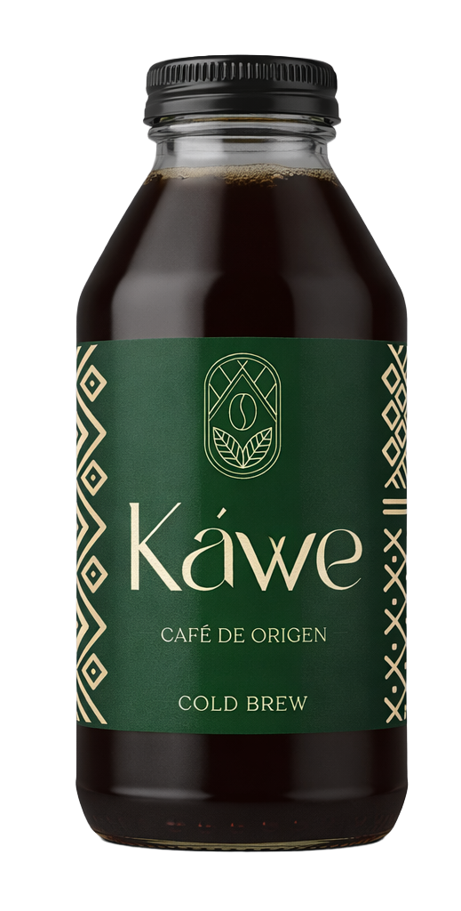

El origen está
despertando...
El Piedemonte
Donde los Andes se rinden ante la inmensidad verde. En Villagarzón, la altura de la montaña abraza la humedad de la selva para cultivar nuestra esencia.
Un portal entre dos mundos.
Fuerza Compartida
El alma de Káwe no nace en las máquinas, nace en las manos. En la tradición de la Minga, el trabajo colectivo de las mujeres de Villagarzón transforma la tierra.
Selecciona un elemento para revelar la historia ↓
Imagen
Título
Texto de la historia...
18 Horas.
Gota a Gota.
La paciencia del Piedemonte destilada en frío.
El tiempo es nuestro ingrediente más valioso.

El origen ha despertado.
Presentamos nuestro Cold Brew de Especialidad.
La energía viva del Piedemonte Amazónico, embotellada.